Практичні курси · журнал «ДентАрт» 2019 №2
Реставрація контактних поверхонь передніх зубів
RESTORATION OF THE CONTACT SURFACES OF ANTERIOR TEETH
Ксенія Лазарєва,клініка-студія «Аполлонія» (м. Полтава, Україна)
Ключ до успішного моделювання передніх зубів – створення правильного контуру контактних поверхонь. Існує багато технік, які дозволяють лікареві мати певний рівень імпровізації при відновленні зубів з порожнинами класів III і IV за Блеком, проте основною складністю є правильний аналіз форми зуба, його анатомічних елементів, який полегшує розуміння того, що потрібно побудувати.
Реставрація контактних поверхонь становить певні складнощі для оператора. Існує безліч технік, які різняться в підході і залежать від протоколу реставрації. Зазвичай для відновлення проксимальних поверхонь зубів використовуються металеві чи целулоїдні смужки або овоїдні матриці з різних матричних систем, зуби при цьому сепаруються міжзубними клинами, які потрібні не тільки для кращого доступу до поверхні, але й забезпечення гарного прилягання матриці у приясенній частині зуба. Часто використовувані техніки реставрації передніх зубів передбачають спочатку побудову зуба з піднебінної поверхні, потім закриття бічної поверхні і тільки на останньому етапі – відновлення внутрішнього об’єму дентину і вестибулярної стінки. При реставрації бічної стінки переднього зуба, особливо при поєднуваному каріозному ураженні проксимальних поверхонь кількох зубів, міжзубні клини і матриці заважають оглядові і конденсації композиту, позбавляють можливості правильно позиціонувати контактну точку в залежності від кривизни проксимальної поверхні зуба. Коли стоматолог у процесі реставрації повинен витягти клин, може початися кровотеча в зоні міжзубного сосочка, пов’язана з ішемічною компресією і травмою ясен, і кров може потрапити на зону вестибулярної поверхні навіть за наявності рабердаму.
Варіанти моделювання контактної поверхні
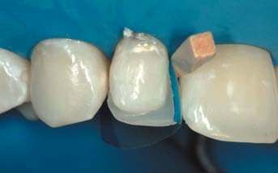
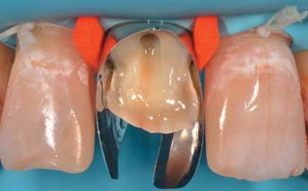
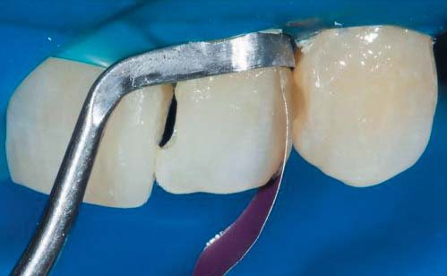
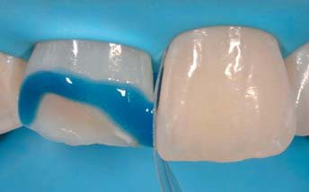
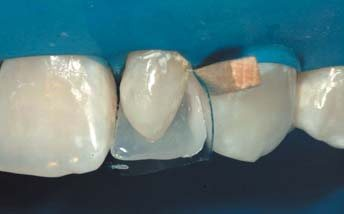
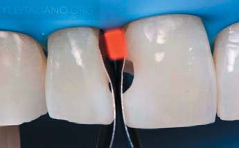
Металева смужка. Поверхня виходить площинною, вимагає тривалої обробки штрипсами, погано візуалізується точка контакту. При протягуванні матриці матеріал може тягнутися за нею, що не дає можливості чисто сформувати точку контакту.
Лавсанова смужка. Рівна целулоїдна смужка, притиснута гладилкою до сусіднього зуба, дає можливість отримати точковий контакт, але не дозволяє отримати профіль крайового валика або вимагає тривалої обробки. При протягуванні матриці матеріал може тягнутися, що заважає формуванню точки контакту.
Металеві матриці овоїдного профілю. Металеві об’ємні матриці не дозволяють сформувати контактні поверхні різного профілю. Матриця закриває огляд при побудові, ускладнює конденсацію композиту і не дає можливості обтиснути її для створення правильного профілю валика.
Лавсанові готові матриці с-подібного профілю. Точка контакту вимагає обробки, утворюється шов на вестибулярній поверхні при побудові контактної поверхні до побудови вестибулярної.
Морфологія контактної поверхні
Перед побудовою контактної поверхні проаналізуємо основні анатомічні закони та принципи побудови.
Правильні контактні співвідношення між сусідніми зубами у зубній дузі важливі з таких причин: вони запобігають ретенції їжі між зубами і допомагають стабілізувати положення зубів у дузі за рахунок міцного контакту один з одним. За винятком третіх молярів, кожен зуб у зубній дузі частково підтримується за допомогою контакту з двома сусідніми зубами, медіальним і дистальним. Якщо через якусь причину їжа застряє між зубами за контактними зонами, тканини ясен, які заповнюють міжзубні проміжки, можуть травмуватися і запалюватися (гінгівіт), і врешті-решт у процес втягуються глибші структури пародонту з втратою кісткової тканини та епітеліального прикріплення (пародонтит). У зоні окремого зуба може виникати надлишковий оклюзійний тиск (травматична оклюзія), коли звичне оклюзійне навантаження не розподіляється на кілька зубів. Нормальне оклюзійне навантаження стає надлишковим за втрати структур, що підтримують зуб, у результаті захворювань пародонту. Контактні поверхні слід оцінювати з кількох боків – язичного (піднебінного), щічного, а також оклюзійного.
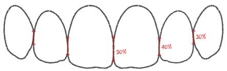
Міжзубна контактна зона – та, в якій стикаються два зуби, що стоять поруч, в ідеалізованій естетиці підкоряється правилу 50 – 40 – 30. Це означає, що видима площина дотику центральних різців становить 50% їх висоти, бічних і центральних – 40%, бічних різців та іклів – 30% висоти центральних різців.
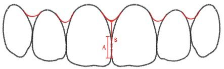
За наявності «чорних трикутників» внаслідок резорбції кісткової перегородки або занадто довгих зубів ясенний сосочок не може заповнити весь міжзубний простір, що призводить до порушення естетичного балансу. Рекомендовано зміщувати верхню межу контактної зони апікально. Такі зуби завжди набувають більш прямокутної форми. Слід працювати дуже акуратно і пам’ятати, що таке рішення є певним естетичним компромісом.
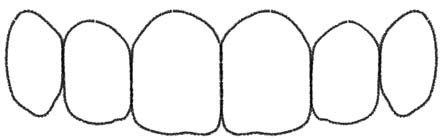
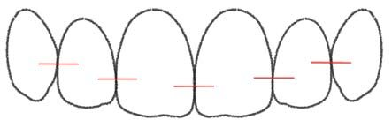
Власне контакт утворений контактним пунктом або контактною точкою, площа якої може варіювати в залежності від щільності контактів, скупченості зубів. Контактний пункт дистальної проксимальної поверхні зуба за рахунок її більш випуклої форми зміщується апікально від ріжучого краю і розташований приблизно посередині коронки. Контактний пункт медіальної проксимальної поверхні більш прямий, розташований ближче до ріжучого краю. Перепад між двома контактними точками одного зуба може варіювати залежно від форми зуба (трикутна, овальна, прямокутна), але в середньому становить близько 1 мм.
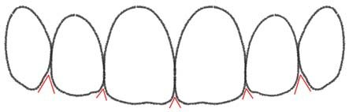
Проксимальні поверхні після контактної точки розходяться і формують кутик зуба, який між передніми різцями має мінімальну відстань, в основі гостріший кут, в дистальному напрямку ця відстань в основі трикутника буде збільшуватися, кут між сусідніми зубами стає ширшим і між іклом та премоляром становить близько 90°. У міру стирання зубів форма кутиків загострюється, а точка контакту зміщується до ріжучого краю.
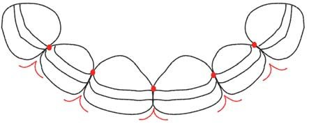
Профіль контактної поверхні, сформований проксимальними валиками, залежить від форми зуба, але з боку ріжучого краю відкритий лабіально і має форму «чайки», таким чином точка контакту передніх зубів зміщена орально.
Протокол побудови контактних поверхонь передніх зубів
Етапи побудови проілюстровані фотознімками. Клінічний приклад відновлення контактів передніх зубів. Змодельована клінічна ситуація з дефектом класу III за Блеком.
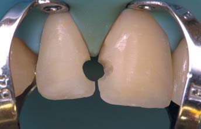
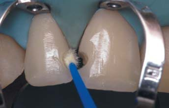
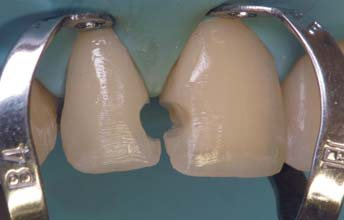
Препарування виконується у вільному дизайні борами кулястої обтічної форми зернистості 100-120 мк (не має маркування). При препаруванні на вестибулярній поверхні слід створити скіс фінішним бором з жовтим маркуванням (зернистість 30 мк). Скіс протяжністю близько 1,5-2 мм дасть можливість створити плавний колірний перехід композит – емаль. Піднебінна емаль не вимагає виконання скосу і препарується перпендикулярно до поверхні. Розколоті емалеві призми країв препарованої поверхні загладжуються до однорідного переходу. При невеликих дефектах протравлювання може виконуватися одномоментно. Етап протравлювання та адгезивної обробки залежить від обраної адгезивної системи. При тотальному протравлюванні вітальних зубів дорослих емаль протравлюється не менше 30 сек, дентин – не більше 15 сек. Експозиція більшості однопляшкових спиртових адгезивів – 20 сек. Далі рекомендовано внести текучий композит для амортизаційного захисту адгезивного шару.
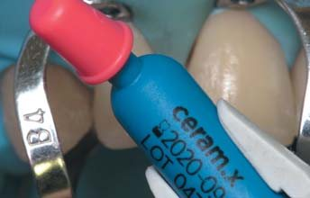
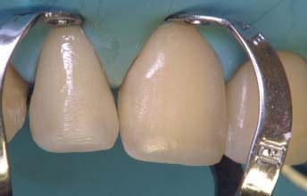
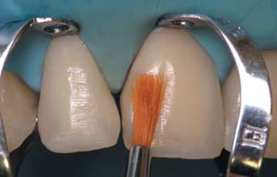
Етап побудови контактів виконується після побудови коронки/коронок зуба в основі. Кількість шарів залежить від глибини дефекту і може включати різні за наповненістю композити, що імітують дентин і емаль. Слід розуміти, що основні площини повинні бути закладені на цьому етапі, і розширення від шийки до проксимальної зони – запорука правильного формування контакту. Якщо його не зробити, анатомія буде порушена, і це загрожує формуванням чорних трикутників. Тонка металева смужка повинна вільно проходити між зубами. Чистота загладжування композиту на емаль у зоні скосу забезпечить плавне ковзання бору при видаленні надлишку на етапі обробки контакту після побудови.
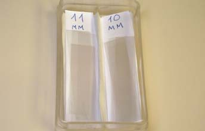
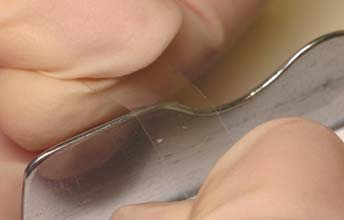
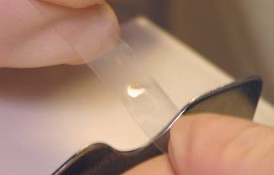
Пропонуємо для побудови контактів використовувати лавсанові смужки, контуровані на спеціальному пристрої. Для дистальної поверхні слід зробити опуклість по середині коронки більшого об’єму, а для медіальної – ближче до одного з країв меншого об’єму. Ширина смужки залежить від довжини зуба, таким чином на бічних різцях вдасться побудувати контактну поверхню смужкою стандартної ширини 9 мм, а для центральних різців, стандартна висота яких становить 10,5 мм, потрібна смужка шириною 11 мм.
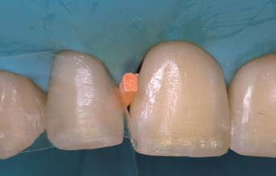
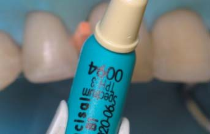
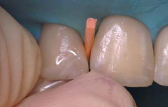
Для сепарації зубів використовуються пластикові або дерев’яні клини, ширина яких залежить від відстані між шийками зубів, що стоять поруч.
Клин не тільки притискає відконтуровану смужку до шийки зуба, але й повинен сепарувати зуби. Це вельми неприємні для пацієнта відчуття, тому попередньо рекомендовано зробити термінальну і різцеву анестезію. Власне контакт формується з легко вклеюваного матеріалу. Надлишок, що утворюється при побудові, слід видаляти бором, штрипсою у пришийковій зоні, тому ми рекомендуємо для цього використовувати менш міцний композит, наприклад прозорий відтінок мікрогібриду. Після внесення порції композиту з вестибулярної поверхні він адаптується в щілини за допомогою широкої тонкої гладилки, до появи матеріалу з піднебінної поверхні.
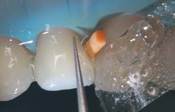
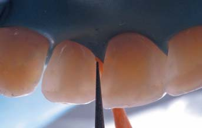
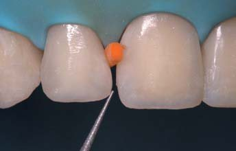
Далі нескладна «гімнастична вправа» для вказівного і великого пальців обох рук дозволяє натягнути матрицю в зоні шийки, тим самим заблокувати матеріал і, переміщуючи матрицю вгору, переспрямувати його в об’єм контактної точки. Надлишок матеріалу виходить на вестибулярну поверхню, і його нескладно буде прибрати при обробці.
Набагато важливіше простежити, в якій точці зупинити матеріал у контактній зоні. При цьому лікар і асистент змінюють позицію на 9 або 3 години в залежності від того, який контакт вони будують у даний момент. Полімеризують сформовану порцію композиту через матрицю протягом 10 с.
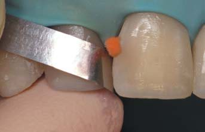
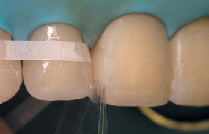
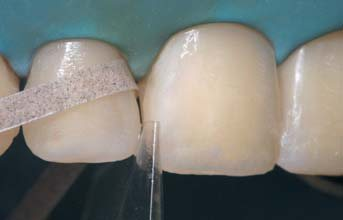
Наступним етапом до видалення клина видаляється надлишок за допомогою списоподібного фінішного бору по вестибулярній і піднебінних поверхнях, щоб створити плавний перехід з вестибулярної на контактну поверхню, формуючи проксимальну грань зуба, правильний профіль кутика й амбразури. Рухи повинні виконуватися плавно вздовж поверхні, рухаючись зі своїх тканин у зону контакту, кутик краще формувати бором або абразивною смужкою. Безпосередньо контактна поверхня під прикриттям клина обробляється металевою матрицею низької абразивності (жовте маркування) для видалення поверхневого шару. У пришийковій зоні робиться видалення можливого надлишку і полірування вузькою лавсановою штрипсою. Контакт ліпше захистити від пошкодження складеною навпіл лавсановою смужкою.
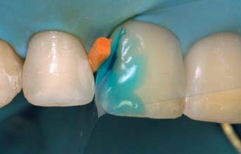
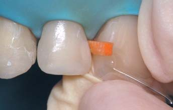
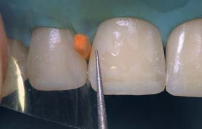
Якщо відновлюємо кілька зубів, етап побудови контактів виконується завжди від крайніх контактів до центру по черзі. Щоб отримати адекватну щільність контактів, треба виконувати послідовно видалення надлишку, обробку, шліфування, полірування контактів, це дозволить уникнути надлишкового зішліфовування композиту в контактній зоні, і як наслідок – ослаблення щільності контакту. Слід зазначити, що при забрудненні липкого шару тирсою, кров’ю або рідиною цей шар, інгібований киснем, варто оновити за допомогою смоли чи тонкоплівкового ненаповненого адгезиву після очищувального кислотного протравлювання.
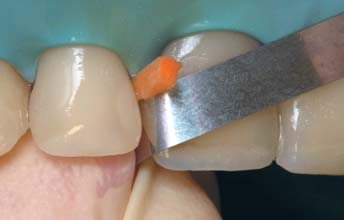
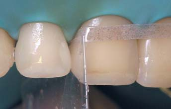
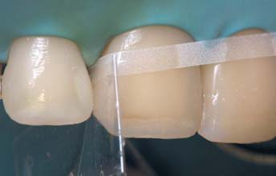
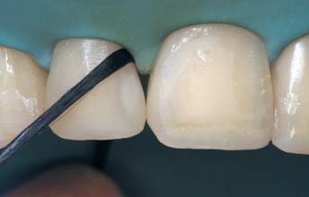
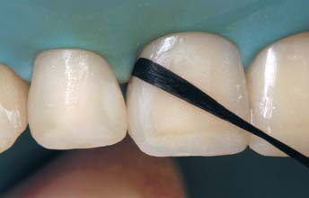
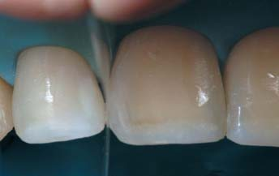
Протокол шліфування незмінний і завжди виконується під рабердамом для уникнення травматизації м’яких тканин. Завершальний етап – контроль гладкості переходу за допомогою флоса, що легко ділиться на волокна, і щільності контактного пункту за допомогою стандартної целулоїдної матриці.
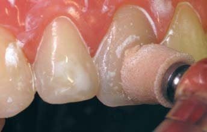
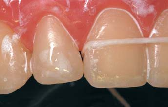
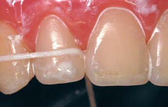
Полірування поверхні виконується за стандартним протоколом системою Enhance, після адаптації по прикусу. Дуже важливо заполірувати контактні поверхні для видалення напливу прозорого адгезиву і запобігання забарвлюванню поверхні контакту в подальшому. У клініці ми використовуємо для цього пасти Prisma Gloss і флос Oral-B Superfloss.
Клінічний приклад 1
Дуже часто корекція контактних поверхонь потрібна після ортодонтичного лікування. До нас була спрямована пацієнтка для консервативної корекції зубів з метою поліпшення естетики усмішки. Ситуація ускладнювалася відсутністю кісткової тканини і пародонтальними проблемами через лише частково вирішену ортодонтичним втручанням тортоаномалію зуба 22. Для закриття «чорного трикутника» верхню межу контактної зони слід було змістити апікально. Незважаючи на певний естетичний компроміс, отримано гарний результат і можна сподіватися на відновлення сосочка між зубами 12 і 22 – при правильному гігієнічному догляді і використанні дентальних флосів та йоржиків.
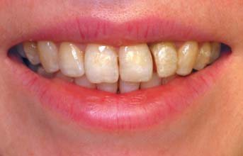
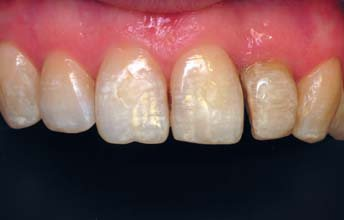
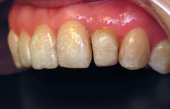
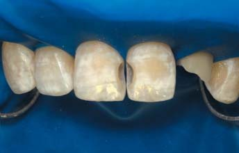
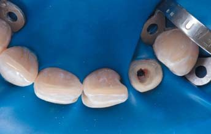
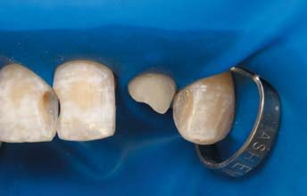
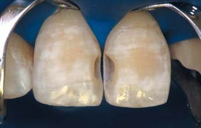
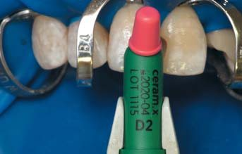
Клінічний приклад 2
У клініку з метою естетичної реабілітації звернулася дівчина-підліток. В анамнезі травма, внаслідок якої обидва центральних різці були забиті, у зв’язку з чим три роки тому провели ендодонтичне лікування і шинування зубів. Жодного болю і дискомфорту, крім естетичного, не відчуває. Має ортопатологію, у зв’язку з якою була спрямована на консультацію до ортодонта перед лікуванням. Ортодонт висловив побоювання з приводу переміщення зубів 11, 21 через передбачуваний анкілоз, що утруднює переміщення і створює ризик перелому. Дуже складна і непередбачувана біомеханіка такого лікування спочатку вимагає ревізії кореневих каналів і тривалого етапу як лікування, так і ретенційного періоду. Зваживши всі аргументи, батьки дівчини вирішили відкласти ортодонтичне лікування. Однак для поліпшення психологічного стану попросили компенсувати естетику верхніх передніх зубів – з подальшою можливістю корекції за необхідності після ортодонтичного лікування.
Єдиним варіантом лікування була обрана пряма реставрація зубів 11 і 12 на корені після ендодонтичного переліковування кореневих каналів, корекція форми зубів 12 і 22 із закриттям трем між зубами і мінімальна корекція стертих рвучих горбиків зубів 13 і 23.
![Складніша реставрація девітальних зубів 11 і 21 після ендодонтичного переліковування. Для створення симетричнішого профілю зенітів і ліпшого огляду рекомендовано замість кламера «метелик» використовувати так звані клампи Бринкера під номером b4. Біоміметична реставрація виконувалася такими матеріалами: парапульпарний дентин – відтінок WO матеріалу Esthet-X HD, плащовий дентин – відтінок D2 матеріалу Ceram-X One Dentin & Enamel, основна емаль – відтінок B2 матеріалу Esthet-X HD, відтінок WE матеріалу Esthet-X HD.](images/laz19-083.jpg)
![Складніша реставрація девітальних зубів 11 і 21 після ендодонтичного переліковування. Для створення симетричнішого профілю зенітів і ліпшого огляду рекомендовано замість кламера «метелик» використовувати так звані клампи Бринкера під номером b4. Біоміметична реставрація виконувалася такими матеріалами: парапульпарний дентин – відтінок WO матеріалу Esthet-X HD, плащовий дентин – відтінок D2 матеріалу Ceram-X One Dentin & Enamel, основна емаль – відтінок B2 матеріалу Esthet-X HD, відтінок WE матеріалу Esthet-X HD.](images/laz19-084.jpg)
![Складніша реставрація девітальних зубів 11 і 21 після ендодонтичного переліковування. Для створення симетричнішого профілю зенітів і ліпшого огляду рекомендовано замість кламера «метелик» використовувати так звані клампи Бринкера під номером b4. Біоміметична реставрація виконувалася такими матеріалами: парапульпарний дентин – відтінок WO матеріалу Esthet-X HD, плащовий дентин – відтінок D2 матеріалу Ceram-X One Dentin & Enamel, основна емаль – відтінок B2 матеріалу Esthet-X HD, відтінок WE матеріалу Esthet-X HD.](images/laz19-085.jpg)
Висновки
Без сумніву, етап відновлення профілю проксимальних поверхонь є одним з найважливіших моментів естетичної реставрації. Помилки при побудові контактних поверхонь можуть бути пов’язані як із загальним неправильним відновленням зуба в основі, так і з окремими моментами, коли, збираючи цю поверхню з двох частин, без обтягування і сепарації ми можемо отримати нависання або нерівну поверхню контакту. Спосіб побудови контактних поверхонь із застосуванням індивідуально контурованих об’ємних лавсанових матриць дозволяє створювати контактні пункти правильної форми і щільності. Також необхідно виконувати контрольні процедури для перевірки якості побудованої поверхні.
Література
- Радлинский С. В. Реставрация контактных поверхностей верхних передних зубов. – ДентАрт. – 2008. – №1. – С. 34-48.
- Rufenacht C. R. Fundamentals of Estetics – Chicagо. Quintessence Publ. Co., 1990. – Р. 116-119.
- Галип Гюрель. Керамические виниры. Искусство и наука. Азбука, 2007. – С. 73-101.
- Jordi Manauta. Восстановление контактного пункта зубов. https://styleitaliano.org/synchro-matrix/.
- Дуглас Терри, Вилли Геллер. Эстетическая и реставрационная стоматология. Выбор материалов и методов. Азбука, 2013.